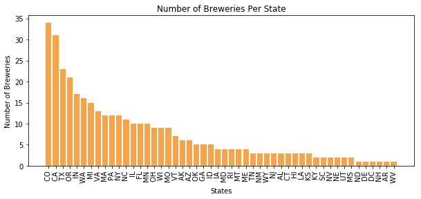
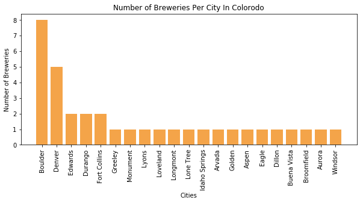

Where Does My Beer Come From?
Beer comes from all over the country, but Colorado is by far the top brewer of craft beer, brewing almost 140 different styles of craft beer! They are followed closely by California, a huge competitor in the craft beer marker.

Colorado also has; as expected with how much craft beer brewed, the most craft beer breweries of any other state. Again, they are trailed closely by California.

Colorado truly has a thriving craft beer culture and industry, with some citites sporting multiple major breweries.

While Colorado is the king of breweries, they are not the largest brewer of our most popular style, the IPA.

That crown belongs to their close rival, California. They brew almost double the types of IPA that Colorado does. Thats quite a lot of IPA's coming out of California!